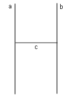
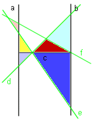

Puzzle 27: Das H-Problem

Gegeben sind die zwei parallelen Geraden a und b sowie die Strecke c,
so dass eine Figur wie der Buchstabe H entsteht.
Zeichnen Sie nun drei Geraden d, e und f derart in die Figur, dass eine maximale Anzahl Dreiecke entsteht.
Dabei dürfen Dreiecke nicht gezählt werden, die ein anderes Dreieck enthalten.

Als Beispiel diene die linke Figur, die sechs Dreiecke entstehen lässt.
Finden Sie z.B. eine Situation, die sieben Dreiecke produziert?
17. Dezember 2005